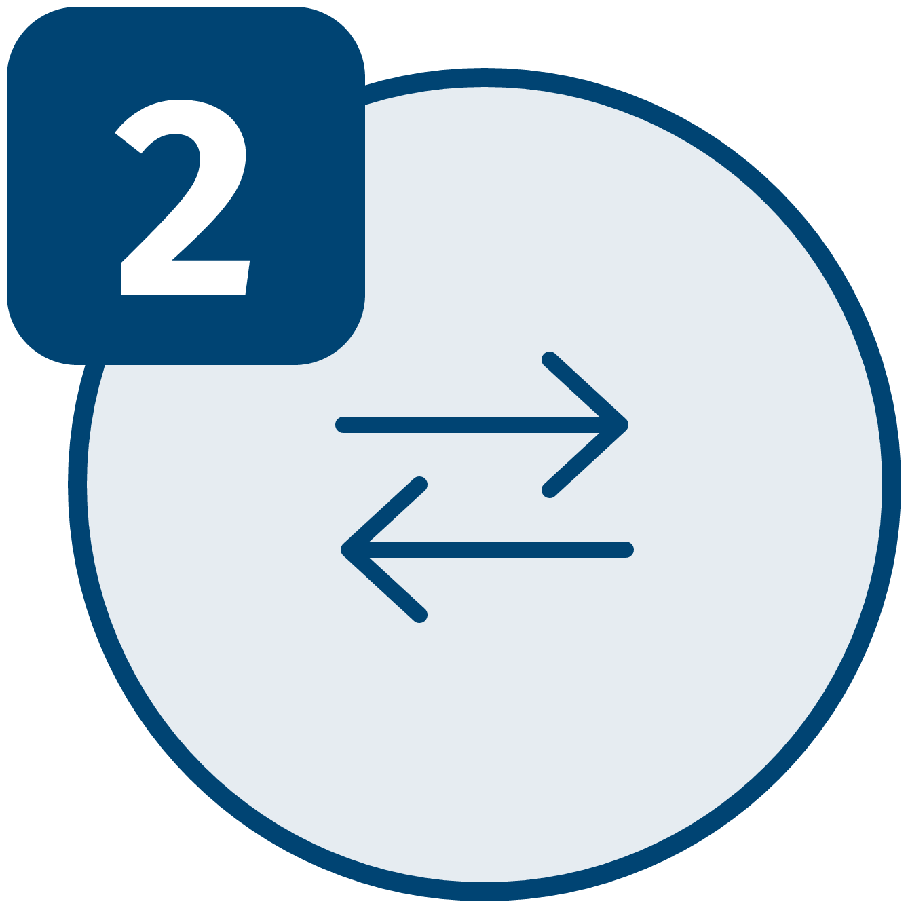
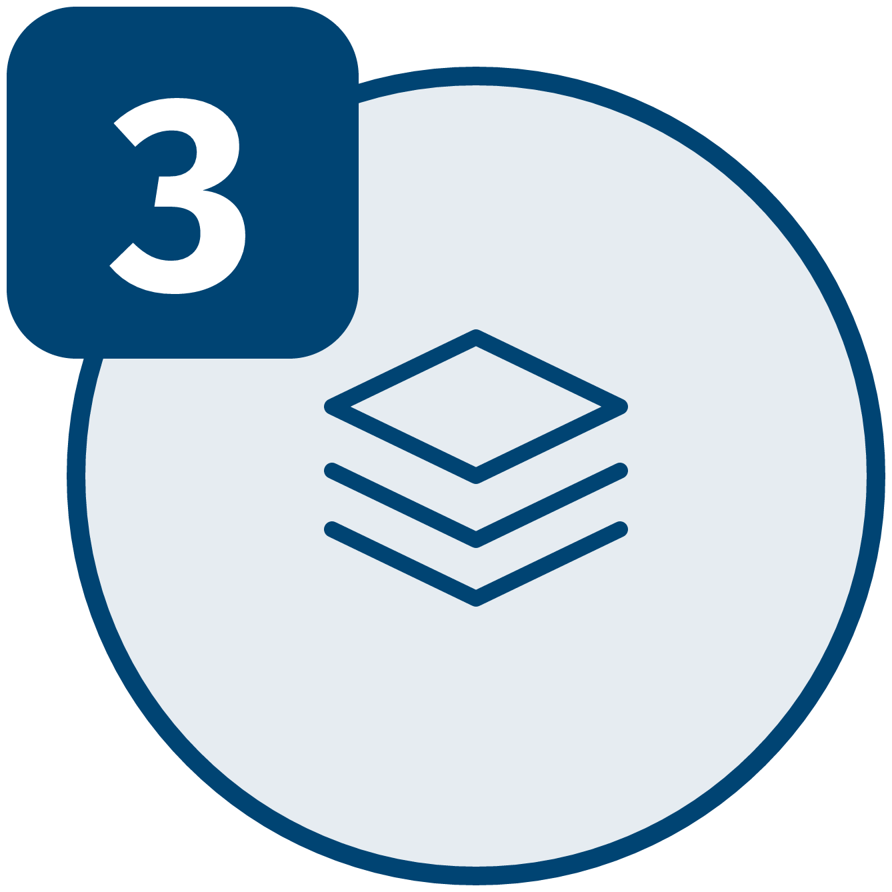
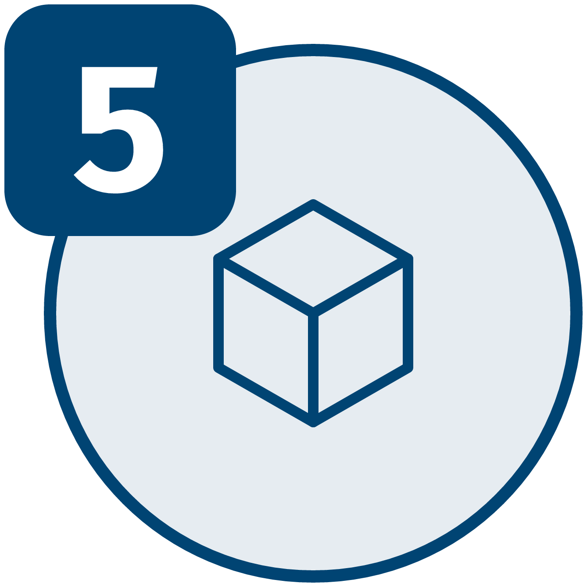

Pictograms: fdo-3d-packager
The six pictograms of the fdo-3d-packager steps: fetch, convert, nexus, mdcff, bundle, build_fdo.

DP.1Pictogram for fdo-3d-packager step 1: fetch the model (Sketchfab API or local files).
FDOx-squirrel, fdox-visuals (Florian Thiery, LEIZA). Code: MIT licence. Source: step names of the fdo-3d-packager CLI.


DP.2Pictogram for fdo-3d-packager step 2: convert the model (Blender to OBJ and textures).
FDOx-squirrel, fdox-visuals (Florian Thiery, LEIZA). Code: MIT licence. Source: step names of the fdo-3d-packager CLI.



DP.3Pictogram for fdo-3d-packager step 3: build the multiresolution model (Nexus).
FDOx-squirrel, fdox-visuals (Florian Thiery, LEIZA). Code: MIT licence. Source: step names of the fdo-3d-packager CLI.


DP.4Pictogram for fdo-3d-packager step 4: write the metadata (MD.cff and CITATION.cff).
FDOx-squirrel, fdox-visuals (Florian Thiery, LEIZA). Code: MIT licence. Source: step names of the fdo-3d-packager CLI.



DP.5Pictogram for fdo-3d-packager step 5: bundle the 3DHOP viewer and the files into one ZIP.
FDOx-squirrel, fdox-visuals (Florian Thiery, LEIZA). Code: MIT licence. Source: step names of the fdo-3d-packager CLI.


DP.6Pictogram for fdo-3d-packager step 6: build the FDO with fdo-squirrel (build_fdo).
FDOx-squirrel, fdox-visuals (Florian Thiery, LEIZA). Code: MIT licence. Source: step names of the fdo-3d-packager CLI.